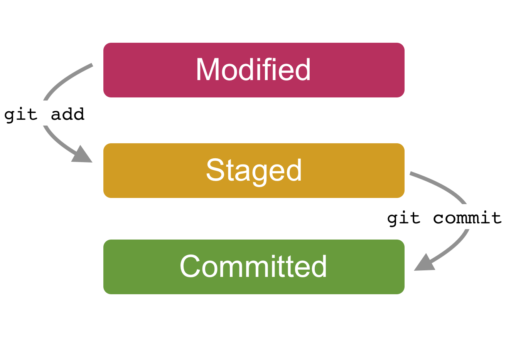
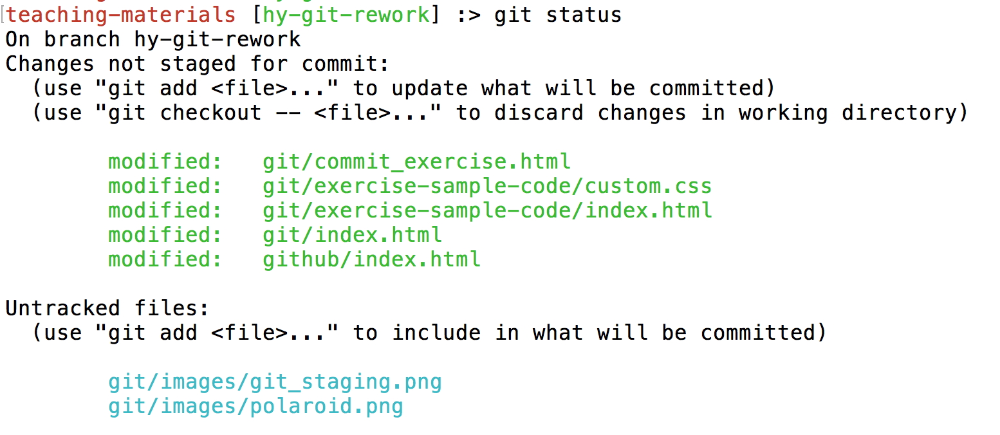
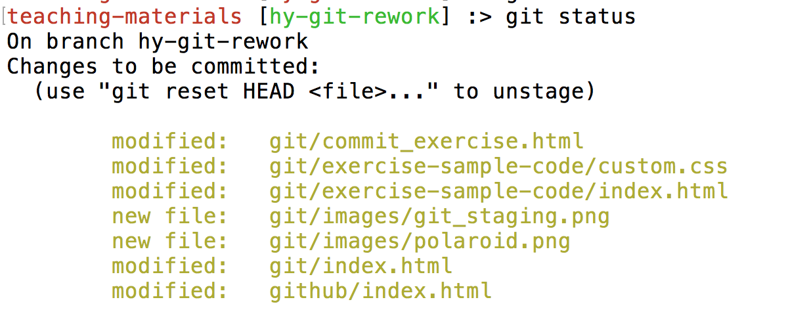
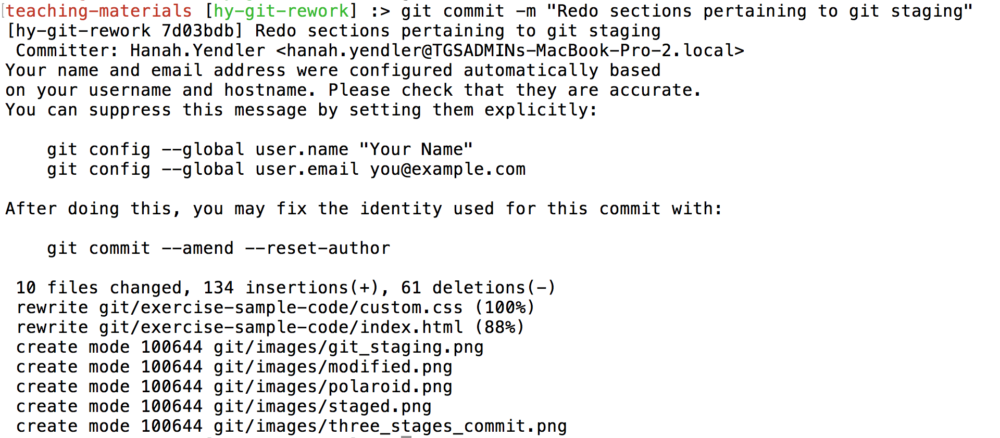

Intro to Git
teaching-materials.org/git
Welcome!
What we will cover in this workshop
- Short recap of the command line
- What is version control and why should we care?
- Basics of Git: the essential commands
If it seems hard, it's because it is
A Google engineer, speaking to an audience of Google engineers, once described the newly invented Git as:
"a version control system which is expressly designed to make you feel less intelligent" (source)
... but it gets easier with practice!
Command Line Recap
Common commands
cd: change directoryls: list all the filesmkdir: make directoryrmdir: remove/delete directorytouch: create a filerm: remove a filepwd: find out the file path of current directory you are in, from the root
terminology note: directory === folder
cd (changing directories)
A little further explanation...
cd folder_name: moves down into the folder
example: cd my_kittens
cd path_name: moves down into the last folder listed
example: cd my_kittens/fuzzball/favorite_foods
cd ..: moves up one folder levelcd ../../../: moves up three folderlevelscd ~: moves to your home directory, no matter where you are
Watch me!
Goal: Create a folder named kittens_project on my desktop
Exercise - Do it on your own!
- Use the command line to navigate to your desktop folder
- Create a folder called kittens_project
- Move inside of your kittens_project folder
- Check to see your current file path!
Potential solution
- Use the command line to navigate to your desktop folder
- Create a folder called kittens_project
- Move inside of your kittens_project folder
- Check to see your current file path!
$ cd Desktop$ mkdir kittens_project$ cd kittens_project$ pwdVersion Control
What is version control?
Version control is a tool that allows you to...
Collaborate
Create anything with other people, from academic papers to entire websites and applications.
Track and revert changes
Mistakes happen. Wouldn't it be nice if you could see the changes that have been made and go back in time to fix something that went wrong?
You already manage versions of your work!
Do you have files somewhere that look like this?
Resume-September2016.docx
Resume-for-Duke-job.docx
ResumeOLD.docx
ResumeNEW.docx
ResumeREALLYREALLYNEW.docxTypes of Version Control Systems
Centralized Version Control

One central server, each client (person) checks out and merges changes to main server
Examples: CVS, Subversion (SVN), Perforce
Distributed Version Control

Each client (person) has a local repository, which they can then reconcile with the main server.
Examples: Git, Mercurial
Why Use Git?
- Fast! Access information quickly and efficiently.
- Distributed! Everyone has her own local copy.
- Scalable! Enables potentially thousands (millions!) of developers to work on single project.
- Local! You don't need a network connection to use it. You only need a remote server if you want to share your code with others (e.g., using GitHub).
- Branches! Keep your coding experiments separate from code that is already working.
- Everyone has a local copy of the shared files and the history.
Installation and Setup

Installation and Setup
Set up name and email in gitconfig
$ git config --global user.name "Your Name Here"
# Sets the default name for Git to use when you commit$ git config --global user.email "your_email@example.com"
# Sets the default email for Git to use when you commit$ git config --listSetup: Setting the default text editor
By default Git is set up to use Vim as the text editor.
(esc + :q or :q! to get out of Vim)
$ git config --global core.editor "nano"
# Sets the default text editor to NanoYou can find commands for other text editors in these instructions.
Setup!

Install Git and set your user name and email.
BONUS LEVEL: If you want to, change your default text editor.
Git has its own Vocabulary
- A repository is where you keep all the files you want to track.
- A branch is the name for a separate line of development, with its own history.
- A commit is an object that holds information about a particular change.
- HEAD refers to the most recent commit on the current branch.
Making a Repo
What is a repository (repo)?
Essentially, a Git version of project folder.
Git will track any changes inside of a repository.
Create a Local Repository - Do it with me!
- Make sure you are inside of your kittens_project
$ pwd - Initialize it as a local Git repository
$ git status # should show an error because # we haven't made it a repository yet! $ git init $ git status
What did we just do?
git initwill transform any folder into a Git repostiory.- You can think of it as giving Git super powers to a folder so that Git starts tracking any changes in that folder.
- If the command
git statusreturns no errors, it means your folder has successfully been Git-ified!
Good repository practices
- Repos are meant to be self-contained project folders. 'Project' can be how you define it - one html page or a whole app.
- Name folders with all lowercase letters and with no spaces - use dashes or underscores instead.
- WARNING NOTE: Do not put a repo inside of a repo. Git will get confused and have no idea what changes to track.
Tracking Changes
Tracking States in Git
As you make changes in your repo, you can tell Git how to treat those changes.
Modify a file - do it with me!
- Create a new file in your new folder named
kitten.txt$ touch kitten.txt - Check the status of your repo with
git status$ git status
Modified/Untracked
When you make changes to a file or add a new file but haven't added or committed yet
Add a file to staging - do it with me!
- Tell Git to track our new file with git add
$ git add kitten.txt - Check the status of your repo with
git status$ git status
Staged
When you use git add to let Git know that these are the files you want to 'stage' or prepare for committing.
Committing changes - do it with me!
- Check the status of your repo with
git status. Make sure that the changes listed represent exactly what you want to commit.$ git status - Commit the change with a message that explains and describes what changes you made.
$ git commit -m "First commit. Added kitten.txt to repository."
Committed!
Success!
Congratulations.
You are now using Git.

Whoa.
What did we just do??
How is this different from just saving a file?
- When we add a new file, we tell Git to add the file to the repository to be tracked.
- This is also called staging a file. We can see our changes in the staging area (aka the index, aka the cache), ready to be saved.
- A commit saves the changes made to a file, not the file as a whole. The commit will have a unique ID so we can track which changes were committed when and by whom.
In other words...
...a commit is like a snapshot of your project at a current time
Look at your progress
$ git logcommit 6853adc0b6bc35f1a8ca0a6aa5e59c978148819b
Author: Your name <you@your-email.com>
Date: Tues May 23 16:01:22 2017 -0700
First commit. Added kitten.txt to repository.
: Type q to exit the log.
When to commit?
- Commit early and often!
- When you have completed a mini 'idea' or 'task':
- You got a function to work!
- You corrected a few misspellings
- You added some images
- IMPORTANT NOTE: Commit when your code works! Try not to commit broken code
Good commit messages
Include a descriptive but succinct message of the changes you have made, in the present tense
$ git commit -m "Add capitalization function for header text"
Main point is: other people need to be able to read your commit history and understand what you were accomplishing at each step of the way
Article: Art of the commitQuick review
git init: turns a folder into a Git repositorygit status: checks the status of your filesgit add file_name: adds file to the staging areagit commit -m "your commit message": commits your changesgit log: see your commits so far
Commit Exercise - Do It Yourself!
Click here for the exercise!The Magical Realms of Git
Each of the states of Git corresponds to an area of the Git repo, so here's some vocab:

The Magical Realms of Git
- Working directory/tree: The current version of your project where you are making changes (which is reflected in your code editor)
- Staging Area: The place where you stage your files when you are readying them to commit
- Repository: When you commit, Git permanently saves only the changes from your staging area to the repo's memory
Reverting Changes
We all make mistakes

Don't worry. Git is your friend.
Set up
- Move back to your kittens_project repository
- Watch me do the next examples first, then try it yourself!
Scenario 1: Undoing modified/untracked changes
You made some changes to some files (have not git added or committed yet), and realize you don't want those changes!
Open kitten.txt and make some changes or add something new. Then:
$ git checkout kitten.txtLook at kitten.txt in your editor: your changes are gone (you've gone back to the previous commit state).
Scenario 2: Unstaging a file
You git add a modified or new file, but realized you don't want it your next commit!
In your text editor, create a new file, and name it possum.txt. Then:
$ git add possum.txt
$ git status
$ git reset possum.txt
$ git statusThe file is removed from staging, but your working copy will be unchanged.
Scenario 3a: Uncommitting, but want to keep all your changes
You made a commit, but then realize that a piece of code doesn't work, so you just want to uncommit!
Open kitten.txt and make some changes. Then:
$ git add kitten.txt
$ git status
$ git commit -m "Make changes to kitten text file"
$ git reset --soft HEAD~1
$ git statusExplanation
Your most recent commit is called the HEAD.
Passing git reset the options of --soft HEAD~1 essentially asks to move the HEAD back by one commit (essentially uncommitting your most recent commit).
--soft means you won't lose your changes—they'll just move to staging.
Scenario 3b: Uncommitting, but you don't want to keep any changes, period 🔥
You realize you don't want any of the code in your previous commit, so just getting rid of that commit completely
You still have the change in the staging area for kitten.txt
$ git add kitten.txt
$ git status
$ git commit -m "Make changes to kitten text file"
$ git reset --hard HEAD~1
$ git statusExplanation
passing git reset the options of --hard HEAD~1 will delete the last specified commit and all the work related to it.
Heads up—there are many, many different ways to undo changes. That's what's powerful about Git. Learn more at Atlassian tutorial
Branching
Branching

A branch is essentially another copy of your repo that will allow you to isolate changes and leave the original copy untouched. You can later choose to combine these changes in whole or part with the "master" copy, or not.
Branches are good for features!
Pssst...what's a feature?
Can be something as big as adding a new section to a site or an app, to a small functionality (a carousel on the homepage)
Branching

Why Do We Need Branching?
- Develop different code on the same base
- Conduct experimental work without affecting the work on master branch
- Incorporate changes to your master branch only if and when you are ready...or discard them easily
Branches are cheap!
Branching cycle
So, you want to develop a new feature:
- Make sure you are on master
- Create a new branch and jump over to it
- Develop your code. Commit commit commit!
- When the feature is done, merge it into master
- Delete your feature branch!
Branching - Do it with me!
Create a new branch called feature
$ git branch
// you should see only * master
$ git checkout -b feature
$ git branch
// you should see * feature and master
Okay, let's break that down
git branch: tells you what branches you have, and*indicates which branch you are currently ongit checkout -b branch-name: the-bcreates a new branch, andcheckoutwill hop you over to that branch
Committing on a new branch - Do it with me!
Add new lines to kitten.txt
$ git add kitten.txt
$ git commit -m "Adding changes to feature"
$ git log --oneline
Branching
What we just did, in picture form:
Switching branches - Do it with me!
$ git branch
Switch to master branch and look at the commit history
$ git checkout master
$ git log --oneline
Switch to feature branch and look at the commit history
$ git checkout feature
$ git log --oneline
Merging - Do it With Me!
Merge to get changes from one branch into another
Switch to master and merge changes
$ git checkout master
$ git merge feature
$ git log --oneline
Merging Branches
When you merge, you create a new commit on the branch you just merged into

Delete feature branch - Do it With Me!
Since your code from your feature branch is merged into master, you don't need the branch anymore!
$ git branch -d feature-branch
Hint: Make sure not to be on the branch you are deleting.
Quick review
git checkout -b branch_name: creates a new branch and hops over to it/li>git checkout branch_name: switch to another branchgit branch: lists all your branchesgit merge branch_name: merges branch into the current branchgit branch -d branch_name: deletes branch
Branching & Merging Exercise
Click here for the exercise!What could possibly go wrong?

What is a merge conflict?

what a merge conflict looks like
You will see this in the affected file your text editor
Here are lines that are either unchanged from the common ancestor,
or cleanly resolved because only one side changed.
<<<<<<< yours:sample.txt
Your changes are reflected here in this section.
=======
Their changes are here in this section, in conflict with yours.
>>>>>>> theirs:sample.txt
And here is another line that is cleanly resolved or unmodified.
Merge Conflicts - Do it with me!
Go back to your kittens_project on your desktop
Change the first line in kitten.txt in master branch
$ git add kitten.txt
$ git commit -m "Changing kitten in master"
Now change the first line in kitten.txt in feature branch
$ git checkout feature
# open kitten.txt and change the first line
$ git add kitten.txt
$ git commit -m "Changing kitten in feature"
Merge conflicts, cont.
Merge the changes from master into the feature branch
$ git merge master #remember, you are on the feature branch here
You will be notified of a conflict. Go to the file in your editor and fix the problem. Then add and commit your edits.
Merging

The merge conflict occurred because the feature branch (which is based off of master) both had divergent histories for the same file.
Vocabulary Review
- A repository is where you keep all the files you want to track.
- A branch is the name for a separate line of development, with its own history.
- A commit is an object that holds information about a particular change.
- HEAD refers to the most recent commit on the current branch.
Command Review
- init
- status
- add
- commit
- log
- branch
- checkout
- merge
Questions?